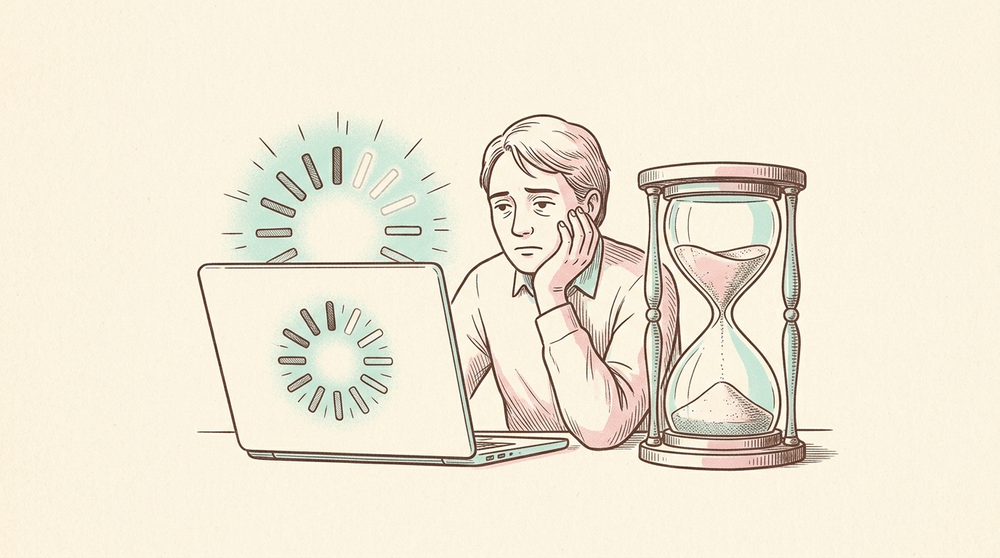
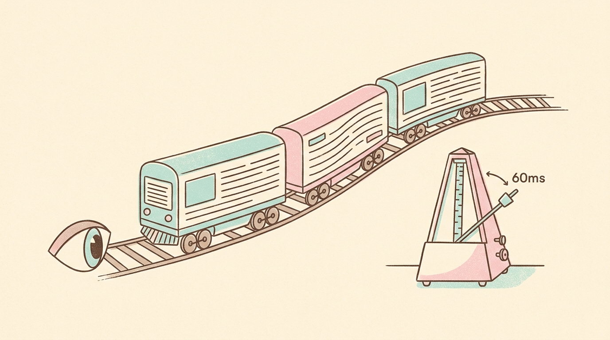
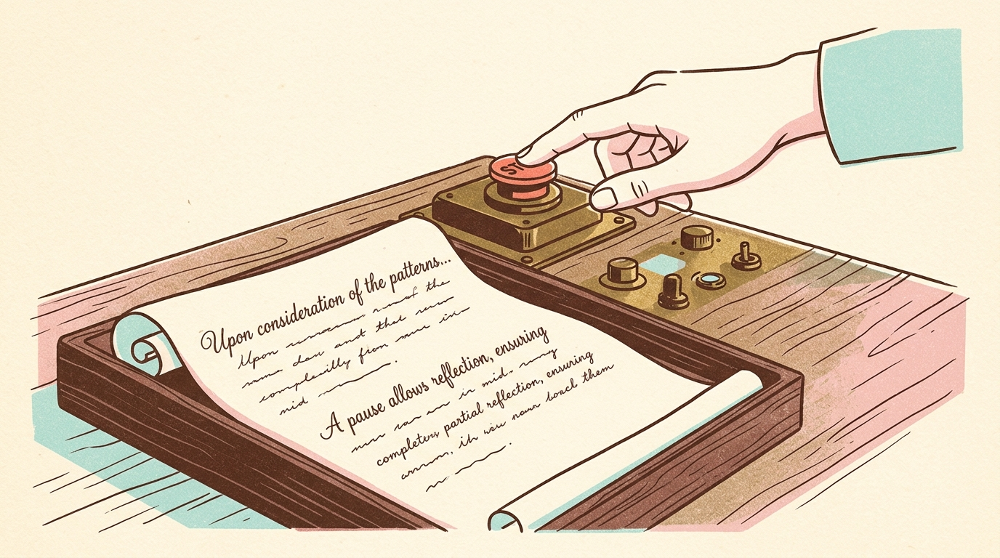

从转圈、骨架屏到流式：如何做一个让人舒服的 AI 界面
120ms 的筛选加了骨架屏，11 秒的 Agent 深度推理却只留一个光秃秃的旋转菊花。力气全用错了区间，用户盯着屏幕，反复猜疑系统是不是已经死机。

半个世纪未曾改变的人类认知阈值（Miller 1968 / Nielsen 1993）：
在交互前 150ms 展现的果断，能替后续漫长的模型推理争取整整一秒的心理宽容度。
旋转菊花在对用户撒谎：转了 800ms 是这个速度，转了 30 秒还是这个速度。它什么都没说，只暴露了开发者根本没测过耗时。
| 耗时区间 | 推荐交互组件 | 为什么不能用别的？ |
|---|---|---|
| < 1 秒 | 按钮按下态（0 动画） | 加任何 Spinner 都会让界面显得迟钝频闪 |
| 1 ~ 4 秒 | 精准轮廓骨架屏（Skeleton） | 仅在预先知道结果形状时用；未知时宁留旧内容 |
| 4 ~ 15 秒 | 已逝挂钟秒数 + 明确步骤名 | 诚实展现进度，击碎死机猜疑 |
| > 15 秒 | 独立等待场域 / 浮窗最小化 | 用户一定会切走，必须支持后台运行与离屏耐受 |
大模型推理无法预知耗时，冲到 90% 一动不动的假进度条是用户一眼识破的谎言。如实展示已逝时间是诚实且零成本的解法。
认知心理学表明：当用户确切知道时间在稳步流逝、且明确处于哪个步骤时，感知等待焦虑会直降 40% 以上。
大模型吐出的 Token 是突发的（Burst）：卡顿半秒，然后呼啦涌出一大批。直接 append 会导致文字剧烈一顿一挫——在人的感知里，抽搐比慢更像系统崩溃。

平滑发射缓冲区让文字有了呼吸感。读者视线前平稳筑起整行文字跑道，体感是“字在等我读”，而不是“我被字追着跑”。
光标上方的文字必须保持绝对静止。如果光标在底下打字，上面的文字却在疯狂跳动重排，会让人产生强烈的眩晕感。
无法打断的漫长等待就像一场人质危机。中止（Stop）按钮必须严格留在原来的发送位置，并做到中止即定格资产。

点击 Stop 瞬间在前端 Abort 掉连接，但已经生成的段落必须完好保留在卡片中并允许复制。一打断就蒸发清屏是对用户操作的残酷惩罚。
把延迟变成一种坦诚、受控且有呼吸感的交互材料：
0 ms
输入框清空，消息气泡 0ms 乐观上屏
400 ms
400ms 内不展示任何 Spinner，防止频闪
4 ~ 15 s
展示等宽挂钟秒数与当前步骤名
> 10 s
心流断裂，系统必须耐受离屏与刷新重连
60 ms/词
平滑发射跑道，光标上方保持 0 次重排
在大模型时代，交互不再是非黑即白的「请求 - 响应」。把等待当成 80% 的日常，用诚实的挂钟、平稳的节拍与受控的中止，筑造一个坦诚、沉静且让人安心的产品界面。